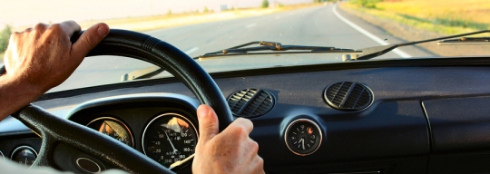
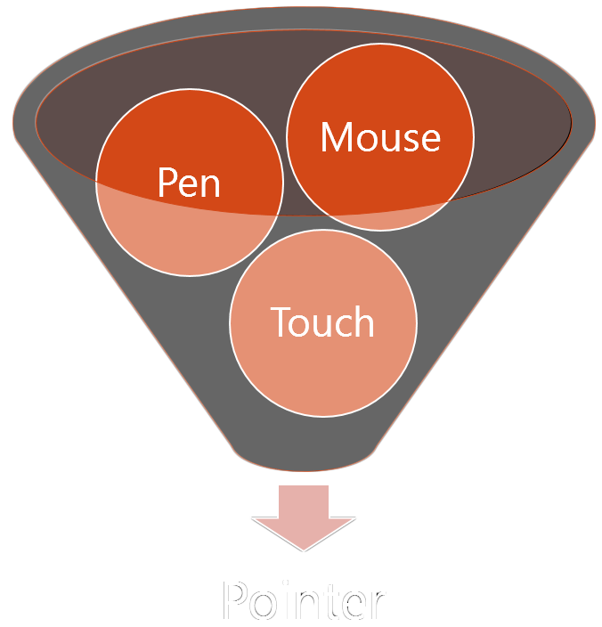
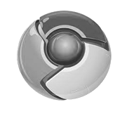

Immersive Interaction Experiences
Pointer Events, Panning & Zooming, and Gestures
- Jacob Rossi
- Internet Explorer
- @jacobrossi
"Point and Click" is so old fashioned
Direct Manipulation (də-'rekt mə-ni-pyə-lā-shən)
Make the user forget they're touching glass
How (not) to handle a gesture
If your gesture handling isn't ongoing, then it isn't direct manipulation
The importance of being natural
Panning & Zooming
Native panning and zooming is fast
Think about how you can leverage that creatively
Color Picker
Introducing the CSS Scrolling Snap Points Spec Proposal
http://www.w3.org/css/css-snappoints/
Other example uses:
Pull-Down Menu
Pointer Events
Pointer Events: beyond the click event, across devices
- Simplicity of mouse events
- With support for multiple device types
- Including multi-touch (even multi-user)
- And, device-specific properties like pressure or touch contact size
You already know the basics
- pointerdown
- pointerup
- pointercancel
- pointermove
- pointerover
- pointerout
- pointerenter
- pointerleave
Device-independent when you want it
Device-specific when you need it
Migrating from Mouse Events
Step 1
eventType.replace("mouse","pointer");
$#@%! Why doesn't it work with touch?
You need to turn off panning/zooming
touch-action- CSS property that specifies which touch actions, like pan or zoom, are possible.- Default Value:
auto - Common Value:
none - Other Values:
pan-x||pan-y||pinch-zoom* ||double-tap-zoom* - If a touch action kicks in, then
pointercancelfires
Handling Multi-Touch
- The
pointerIdproperty gives a valid identifier for each pointer
Additional device properties
| Property | Description |
widthheight | The size of the pointer on the screen. For example, your finger width/height. |
pressure | The amount of pressure applied. Varies from 0 to 1. |
tiltXtiltY | The X/Y offset angles of a stylus from the orthogonal position. |
More device properties
How about other devices?
Using Pointer Events Today
 10 (prefixed)
10 (prefixed)- 11
- Work in progress
-  Work in progress
- jQuery (work in progress)
- Hand.js - http://aka.ms/handjs
- Polymer Polyfill - polymer-project.org/platform/pointer-events.html
- Cordova/PhoneGap plugin
Gesture Events
MSGesture - direct manipulation through script
- Instantiate a gesture recognizer:
var g = new MSGesture(); - Assign a target element:
var elem = document.getElementById("some-elm");
g.target = elem; - Assign pointers to be tracked:
function onPointerDown(event) {
g.addPointer(event.pointerId); } - Listen for gesture events on the target:
elem.addEventListener("MSGestureChange", handleGesture);
Gesture event properties
rotation- number of radians rotated about the centroid of the gesturescale- scale factor (multiplier) by expansion of fingers (pinch)translationX,translationY- linear movement of gesture centroidvelocityX,velocityY- instantaneous linear veolcityvelocityAngular- rate of change of rotation (rad/s)velocityExpansion- rate of change of scale
All values are deltas since last gesture event
Manipulating an Element
MSGesture + CSS Transforms
A few short touch tips
- Use 40px or larger hit targets
- Avoid hover menus
- Touch != No Mouse
- Touch isn't mobile only
- Use specific HTML5 Input types